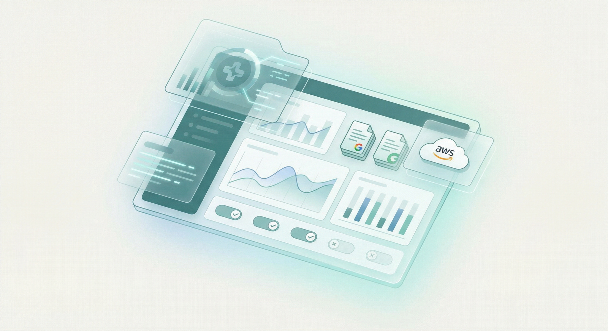
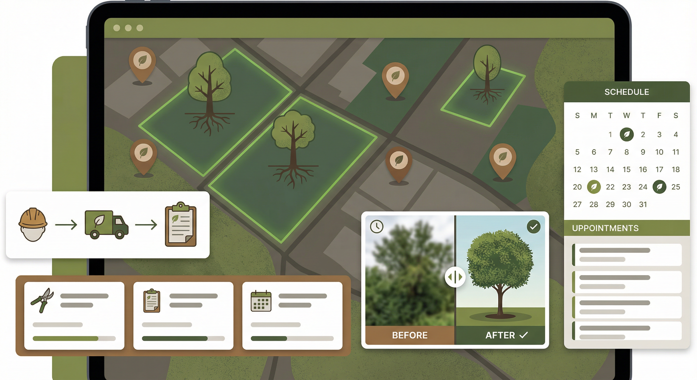
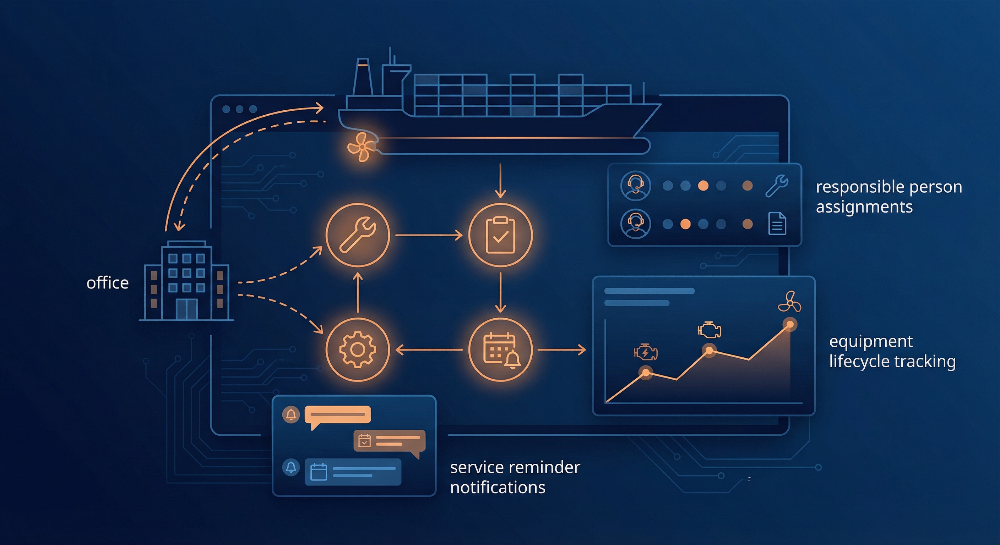

Our Projects
Enterprise-grade solutions built with cutting-edge technology
Enterprise Architecture
Microservices Orchestration Platform
A highly scalable, distributed orchestration engine built on Java 17 and Spring Boot 3.x, implementing choreography and orchestration patterns for enterprise workflow automation. The platform leverages event-driven architecture with Apache Kafka for asynchronous inter-service communication.
- API Gateway with Spring Cloud Gateway for centralized routing and load balancing
- Service Discovery using Netflix Eureka with health monitoring
- Circuit Breaker pattern implementation with Resilience4j
- Distributed tracing with Zipkin and Sleuth for observability
- Containerized deployment on Kubernetes with Helm charts

Healthcare Technology
Research Paper Tracking System
A comprehensive healthcare research paper lifecycle management application featuring a modern responsive UI, seamless Google Sheets API integration for collaborative data management, and AWS AppConfig feature toggles for controlled feature rollouts and A/B testing capabilities.
- Workflow engine for paper submission, review, and publication tracking
- Real-time bidirectional sync with Google Sheets for research data
- AWS AppConfig Feature Flags for dynamic feature toggling
- Analytics dashboard with submission trends and status distribution
- Role-based access control for researchers, reviewers, and admins

Property Management
Arboricultural Contact Management System
An enterprise property management solution for high-tree country municipalities, enabling comprehensive tracking of unwanted/hazardous trees across multiple sites. The platform manages annual tree inventories, vendor contracts, task assignments, and compliance documentation with full geospatial integration.
- Tree inventory with species, dimensions, condition assessment, and site area data
- Annual increment tracking with YoY growth comparison analytics
- Vendor allocation module with contract management and SLA tracking
- Task lifecycle management with start/end geo-tagged photo evidence
- GPS coordinates capture for precise tree location mapping

Maritime Operations
Fleet Equipment Maintenance Platform
A mission-critical fleet management system designed for maritime operations, providing synchronized equipment maintenance tracking between ship-side and shore-office environments. The platform ensures regulatory compliance with proactive service reminders, technician assignments, and comprehensive maintenance history logging.
- Equipment inventory with service history, status, and responsible technician
- Bidirectional sync engine for ship-to-office data synchronization
- Automated service reminder notifications with escalation workflows
- Maintenance calendar with scheduled and unscheduled service tracking
- Offline-capable PWA for ship-side operations with limited connectivity